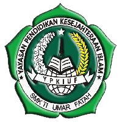

Visi dan Misi SMK Umar Fatah Rembang
VISI
Berwawasan Profesional dan Religius.
Deskripsi Visi :
Menghasilkan lulusan yang profesional dan kompeten di bidang teknologi informasi dan komunikasi untuk memenuhi tuntutan dunia kerja dalam negeri dan luar negeri maupun berwirausaha dalam era globalisasi, serta menjadi insan yang religius.
MISI
1. Melakukan kegiatan pengembangan kurikulum.
2. Melakukan peningkatan proses belajar mengajar di Sekolah.
3. Meningkatkan kompetensi lulusan untuk setiap mata pelajaran.
4. Meningkatkan kompetensi keahlian peserta didik.
5. Meningkatkan keterserapan peserta didik di dunia kerja dan industri.
6. Meningkatkan prestasi akademik dan non akademik.
7. Membentuk mindset enterpreneurship peserta didik.
8. Meningkatkan peran tutor sebaya dalam peningkatan kompetensi peserta didik.
9. Membentuk mindset enterpreneurship tenaga pendidik dan non kependidikan.
10. Meningkatkan kompetensi tenaga pendidik dan non kependidikan.
11. Melakukan pengembangan sarana pendidikan.
12. Melaksanakan kegiatan-kegiatan keagamaan.
13. Mewujudkan kehidupan yang berakhlak mulia.
14. Menerapkan Sistem Manajamen Mutu ISO 9001: 2008 dalam Pengelolaan Organisasi Pendidikan dan Seluruh Warga Sekolah
|
| SMK Umar Fatah Rembang berada di bawah naungan Yayasan Pendidikan Kesejahteraan Islam Umar Fatah yang berdiri pada tahun 2005. SMK Umar Fatah Rembang berdiri dengan kepala Sekolah Bpk. Moh. Nurrohman, S.Kom yang menjabat hingga sekarang. Secara geografis letak SMK Umar Fatah Rembang sangat strategis karena berada di lingkungan perkampungan Ds. Punjulharjo. Meskipun keberadaanya di jauh dari jalan raya namun hal itu membuat pembelajaran lebih efektif karena jauh dari kebisingan lalu lintas.
Awal berdiri SMK Umar Fatah Rembang hanya membuka satu program keahlian, yaitu Rekayasa Perangkat Lunak dengan jumlah siswa pertama sebanyak 40 siswa. Dalam perjalananya selama tiga tahun, SMK Umar Fatah Rembang mampu menambah quota siswanya menjadi 2 kelas (80 siswa). Dan sejak itu, SMK Umar Fatah Rembang terus menigkatkan quota siswanya di tiap tahunnya hingga saat ini mampu menampung 6 Kelas. Tidak hanya itu, sejak tahun 2012 SMK Umar Fatah Rembang telah menambah satu program keahlian yaitu Multimedia.
Berdasarkan hasil akreditasi, status sekolah meningkat menjadi disamakan. Setelah status disamakan diraih SMK Umar Fatah Rembang, masyarakat mulai meyakini keberadaan SMK Umar Fatah Rembang sebagai sekolah yang mempunyai potensi. Prestasi demi prestasi mulai diraih. Prestasi itu terlihat dari seringnya mendapat kejuaraan setiap mengikuti lomba baik di tingkat kabupaten, provinsi maupun lomba di tingkat nasional.
Sejak tahun 2012, SMK Umar Fatah Rembang sudah berstandartkan ISO 9001:2008 dan telah menerapkan sistem bilingual program dalam pembelajaran. Dengan gelar itulah SMK Umar Fatah Rembang merasa tertantang untuk meningkatkan kualitas sekolah baik dari sisi sarana prasarana, manajemen, pelayanan kepada masyarakat demi meraih prestasi sekolah yang lebih baik. |